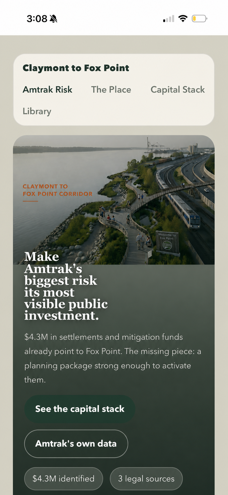
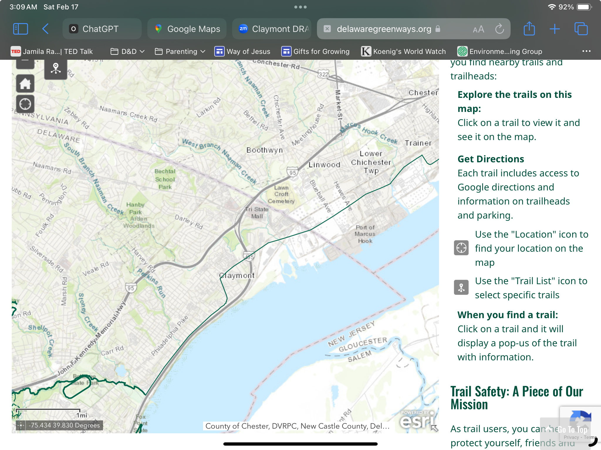

Risk Case
Amtrak already documents the exposure.
Fox Point sits beside one of the Northeast Corridor's most climate-exposed shoreline segments, with documented delay and revenue losses already on the books.

Partner / Funder Brief
$5.03M is already identifiable across mitigation and natural-resource-damage sources. The near-term need is predevelopment capital to turn that source stack into a permit-ready, partner-ready project at Fox Point Cove.
Risk Case
Amtrak already documents the exposure.
Fox Point sits beside one of the Northeast Corridor's most climate-exposed shoreline segments, with documented delay and revenue losses already on the books.
Site Readiness
The geography and restoration path are defined.
DNREC stewardship, OU-2 boundaries, and the final DARP make Fox Point more actionable than a typical blank-sheet waterfront concept.
Use Of Funds
Fund packaging, not another concept loop.
The missing work is design basis, permitting path, sequencing, and partner coordination strong enough to move agencies and capital sources together.
Unlock
$5.03M can move faster with execution prep.
A sponsor here is not inventing demand. It is accelerating a scoped shoreline project toward a fundable and deliverable package.
Risk Case
For partners and funders, this is the investment case: Fox Point sits beside a nationally significant rail edge, and the climate exposure is already documented in Amtrak's own planning and loss history.
$127M
Losses already felt
Revenue + delay costs · 2006–2019
450+
Weather disruptions
2006–2019 · NEC corridor
$220M
Projected revenue losses
Coming decade · if no action
Most urgent for Amtrak
Wilmington is the fastest-sinking shoreline on the entire Northeast Corridor. The Delaware River is rising. Fox Point sits right on that edge — and the rail corridor runs alongside it.
These aren't abstract projections — they're what's already driving Amtrak's $127M in losses. Fox Point is where the corridor meets the shoreline. A restored living shoreline here buffers what's coming.
Storm Frequency Has Nearly Doubled Since 1960
+92%
→ Each storm is another chance for water to reach the tracks. 450 Amtrak disruptions from 2006–2019 trace directly to events like these.
Compound Flooding Threatens Corridor Infrastructure
→ Fox Point Cove, restored as a living shoreline, absorbs both threats: it slows storm runoff and buffers wave action before water reaches the tracks.
Sustained Heat Will Stress Rail Systems Through Mid-Century
+4–5°F
→ Extreme heat buckles rails and fails signals. Restored wetland vegetation at Fox Point helps moderate temperatures along the corridor edge.
Sources: Amtrak Climate Vulnerability Assessment (2022); Amtrak Climate Resilience Strategic Plan (2022); NEC Climate Pilot Adaptation Plan (2017)
Site Readiness

Project Readiness
This should read less like advocacy and more like project packaging. DNREC already has a final DARP, the geography is defined, and the remaining gap is the execution work that makes the project permit-ready and capital-ready.
Regulatory Status
The DNREC record identifies Phase II as HSCA cleanup in long-term stewardship, with OU-2 covering about 203 Delaware River acres across 1.4 miles from RM 73.2 to 74.6, including Fox Point Cove.
Defined Scope
The final DARP selects tidal marsh restoration and enhancement at Fox Point Cove, including invasive removal, grading and clean fill, native wetland planting, living shoreline headland breakwaters, and targeted erosion control at Stoney Creek Wharf.
Delivery Path
The conceptual plan already scopes about 2.3 acres of wetland and intertidal restoration plus 0.4 acre of wetland enhancement, followed by detailed engineering, permitting, construction, and 3 years of monitoring.
Funding Path
These sources do not need a new abstract vision. They need design, permitting, sequencing, and partner coordination strong enough to unlock money that is already tied to Fox Point.
Rep. Heffernan pledged $3M in bond funds to satisfy state mitigation requirements for the new Edgemoor port. $2.5M designated for Fox Point wetland and park improvements. Triggered when port construction begins and Diamond State Port Corp. approves.
The final DARP dated January 9, 2025 identifies Fox Point Cove as the proposed compensatory restoration project. It scopes wetland restoration and enhancement, wharf erosion control, design and permitting, and notes that any unused balance can support added restoration or future maintenance.
Joint federal/state NRD settlement from Chemours' TiO₂ facility at Edgemoor. NOAA is lead trustee. $808K for a joint restoration project. No site selected yet — will require public participation. Fox Point is a natural candidate.
Use Of Funds
A partner or funder contribution here buys the project packaging that public agencies and settlement-backed sources still need: design development, engineering basis, permitting path, and a coordinated activation strategy across the identified funding streams.
Execution Outputs
The value proposition should stay concrete: move Fox Point from source-backed concept to activation-ready project with deliverables that agencies and implementation partners can use immediately.
A concise package of story, visuals, and sourced claims that state agencies, infrastructure partners, and funders can all use without rewriting the project from scratch.
The technical work needed to translate the DARP concept into scoped engineering, permitting, and sequencing decisions that can survive agency review.
One aligned frame for DNREC, Delaware Greenways, corridor advocates, and capital partners so the project can move through approvals and sponsorship with less friction.
A clearer map of which identified dollars can move, under what triggers, and what predevelopment work is required before those sources become usable.
Source Pack
Core reports are hosted locally for reliability. Agency records and partner pages open externally.
No files match that search yet.